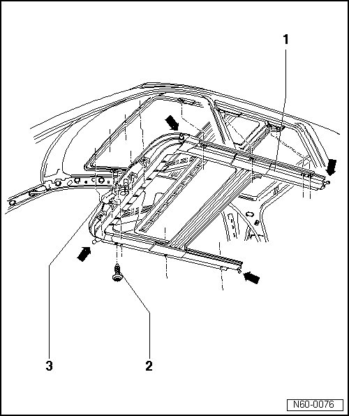
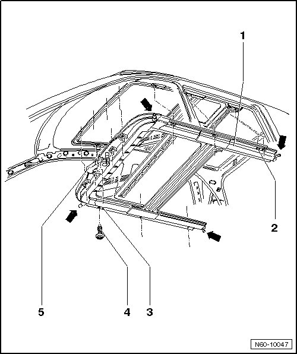

Installation Unit
Sunroof with Glass Panel
Installation Unit
Removing

- Switch off ignition.
- Remove headliner..
- Pull off water drain hoses from assembly unit - 1 - - arrows -.
- Remove bolts - 2 - and remove assembly unit from the vehicle with the help of a second mechanic.
Installation

- With a second technician helping, insert the assembly unit - 1 - into the roof opening.
- Align assembly unit in roof frame with cylindrical pins (reversed drill bits) 10 mm at front right - 3 - and 12 mm at rear left - 2 - dia.. The assembly unit must not rest on the roof frame.
- Insert all bolts - 4 -.
- Check the routing of the electrical consumer wires and connectors on the roof and correct if necessary.
- Secure assembly unit - 1 - of drive motor for sunroof - 5 - beginning at left and right toward rear, tightening specification: 8 Nm.
- Install water drain hoses - arrows -.
- Connect harness connector for drive motor - 3 -.